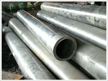

Q235B螺旋管生产工艺Q235B螺旋管的特点
Q235B螺旋管生产工艺 （1）原材料即带钢卷，焊丝，焊剂。在投入前都要经过严格的理化检验。

Q235B螺旋管(3张)
（2） 带钢头尾对接，采用单丝或双丝埋弧焊接，在卷成钢管后采用自动埋弧焊补焊。
（3） 成型前，带钢经过矫平、剪边、刨边，表面清理输送和予弯边处理。
（4） 采用电接点压力表控制输送机两边压下油缸的压力，确保了带钢的平稳输送。
（5） 采用外控或内控辊式成型。
（6） 采用焊缝间隙控制装置来保证焊缝间隙满足焊接要求，管径，错边量和焊缝间隙都得到严格的控制。
（7） 内焊和外焊均采用美国林肯电焊机进行单丝或双丝埋弧焊接，从而获得稳定的焊接规范。
（8） 焊缝经过在线连续超声波自动伤仪检查，保证了100%螺旋焊缝无损检测覆盖率。
（9） 采用空气等离子切割机将钢管切成单根。
（10） 切成单根钢管后，每批钢管头三根要进行严格首检制度，确保制管工艺合格后，正式投入生产。
（11） 焊缝上有连续声波探伤标记的部位，经过手动超声波和X射线复查。
（12） 带钢对焊焊缝及与螺旋焊缝相交的丁型接头的所在管，全部经过X射线电视或拍片检查。
（13） 每根钢管经过静水压试验，压力采用径向密封。试验压力和时间都由钢管水压微机检测装置严格控制。试验参数自动打印记录。
（14） 管端机械加工，使端面垂直度，坡口角和钝边得到准确控制。
Q235B螺旋管的特点
直缝焊管生产工艺简单，生产效率高，成本低，发展较快。螺旋焊管的强度一般比直缝焊管高，能用较窄的坯料生产管径较大的焊管，还可以用同样宽度的坯料生产管径不同的焊管。但是与相同长度的直缝管相比，焊缝长度增加30~100%，而且生产速度较低。因此，较小口径的焊管大都采用直缝焊，大口径焊管则大多采用螺旋焊。
地址：河北沧州螺旋钢管生产基地
手机：186-3170-5801 == QQ791117